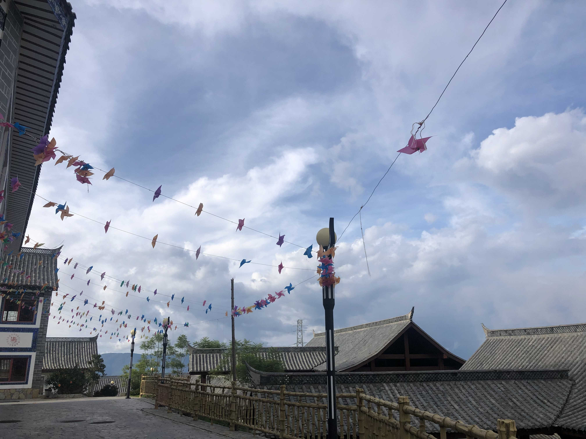
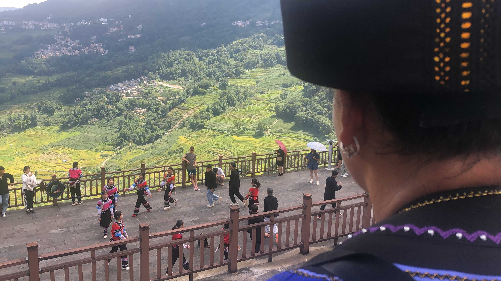
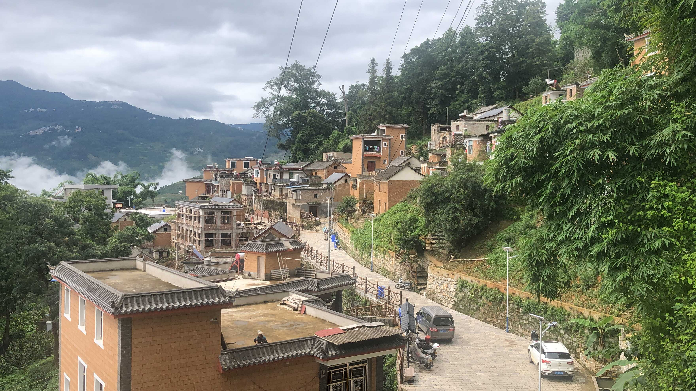
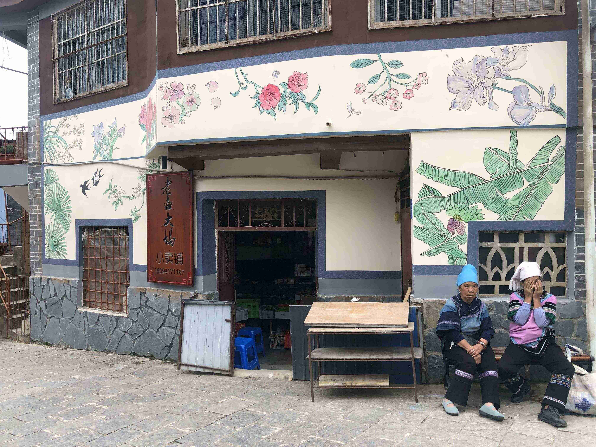

Have You Ever Stumbled Into
A Utopia?
A Utopia?
Sat in the remotest area in Yunnan Province, the town consisted of mostly Hani ethnic groups who spoke a language in a completely different linguistic structure from Chinese, and, thus, had rarely any outside visitors.
So naturally, I imagined the life there to be somewhat backward and humdrum. But I was wrong.
Despite its high altitude, the sky seemed just within reach as I walked along the slopes; although there were not as many people in the town, the place hummed with boundless liveliness.
I once spotted a swarm of elders in blue-and-purple costumes gathering in a square to dance. Upon noticing my presence, they treated me to the local specialty, the sticky rice they had brought from home.
There, I witnessed the beauty of Hani culture, a beauty slowly washed away by mainstream society.
It was a pleasantly cool summer day; we chatted for an afternoon-long using sign language, from the local customs to the similarities between the Hani and Chinese languages. I remembered one of the elders saying regretfully that as a language without a natural script, Hani is gradually being forgotten among young generations under the popularization of Chinese…
And as I studied the elder’s troubled face, I understood the reason she lamented the endangerment of a language though it no longer holds the capacity for effective expression. It wasn’t that capacity she was lamenting, but the richness of a custom that had been passed down from generation to generation.
